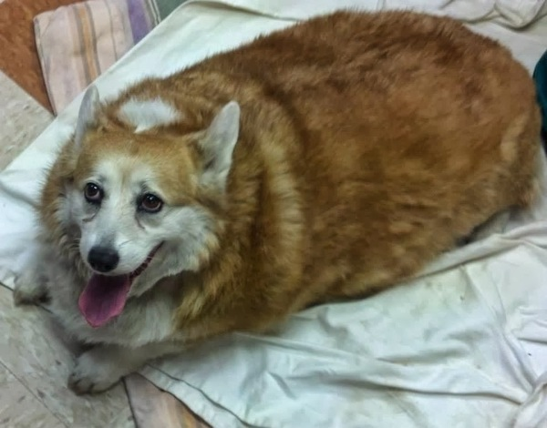
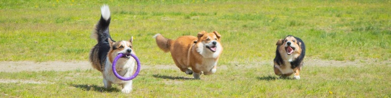

Прививки
Очень важно сделать прививки для своей собаки. Убедитесь, что ваша собака полностью привита, прежде чем вывести её на улицу. Ваш корги может случайно поймать всевозможных паразитов и болезней от других собак. Крайне важно, чтобы корги не выходил на улицу в течении первой недели после прививки. Ваш ветеринар сможет вам подсказать, какие начальные прививки нужны для вашей собаки.
Проблема лишнего веса
Корги могут быть очень замотивированными за еду. Поэтому их очень легко перекормить. К сожалению, многие владельцы Корги поддаются на умоляющие взгляды, на жалобные стоны и прочие намёки на голодание, прекрасно исполняемые этими маленькими актёрами. Корги - профи в этом вопросе, добивающиеся своей цели. Выразительные лица, развитое искусство попрошайки - от этого легко почувствовать себя виноватым и положить ещё кусочек.

Если ваша собака набрала лишний вес, то сброисть его не очень просто. Поиск подходящей еды для вашего активного питомца может занять некоторое время, но важно понимать: если Вы беспокоитесь о здоровье своей собаки, то это время необходимо потратить.
Развитие
Социализация собаки невозможна без прогулок с человеком. Собака изучает издаваемые незнакомыми людьми и другими животными знаки и звуки, адаптируется к шуму. Автомобили, срабатывающая сигнализация и т. д. – всё это должно быть знакомым для собаки. Только тогда ваш питомец не будет бояться в непривычной обстановке. Навыки послушания и дальнейшее развитие обучаемости корги вырабатывается в т. ч. и на прогулках. Пробегающую кошку, крик мамаши на малыша можно сопровождать командой «сидеть». Собака развивает тело и ум, послушание и контроль. Такое обучение и социализация очень важны для этой породы, так как иначе ваша собака может стать неуправляемой.

Время
Хозяева часто жалуются, что нет времени для прогулок с собакой. Действительно ли это так? Соцсети, телефонные разговоры или фильм важнее променада с собакой? Питомцы не появляются в доме из вакуума. Ответственность человек берёт добровольно. Порядочно ли это по отношению к братьям нашим меньшим «не иметь времени» на заботу? Честно ли это сначала приручить, а затем раздражаться из-за того, что собака расходует энергию на борьбу с личными вещами хозяина? Не у всех достаточно в жизни времени на то, чтобы 3 раза в день гулять по часу. 15 минутная совместная пробежка, догонялки на 10 минут или охота за мячиком во дворе заменит длительную прогулку.